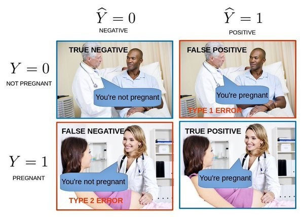

Confusion Matrix can be very confusing, many variables, true positive, false
negative, false positive, F1 score and more.
The confusion matrix, also known as an error matrix, is a specific table layout that allows
visualization of the performance of an algorithm, typically a supervised learning one (in
unsupervised learning it is usually called a matching matrix), calculate the sensitivity and
specificity of the model.
Evaluating the performance of a ML model
let’s assume that we had already fit the model with an algorithm(logistic regression or random
forest classifier or XGBoost classifier etc.), the algorithm task is to classify whether a
person is pregnant or not pregnant.
If the outcome is positive then the person is pregnant, if it's negative then he is not
pregnant.

| Actual Values | |||
|---|---|---|---|
| Predicted Values | Negative(0) | Positive (1) | |
| Negative(0) | TN - True Negative - A person who is actually not pregnant and classified as not pregnant Good prediction |
FN - False Negative - A person who is actually pregnant and classified as not pregnant Bad prediction |
|
| Positive (1) | FP - False Positive - A person who is actually not pregnant and classified as pregnant Bad prediction |
TP - True Positive - A person who is actually pregnant and classified as pregnant Good prediction |
|
Confusion Metrix Mertics
we have a dataset of 100 people -
40 pregnant women and the remaining 60 are not pregnant
women/men with a big belly. Our model confusion is:
| Negative(0) | Positive (1) | |
| Negative(0) | TN = 55 | FN = 10 |
| Positive (1) | FP = 5 | TP = 30 |
1. Accuracy
Equation:Overview: Measures how many observations, both positive and negative, were correctly
classified (TP/TN).
Accuracy may not be a good measure if the dataset is not balanced - both negative and
positive classes have different number of data instances.
For example in our dataset of 100 persons - 90 of them are pregnant and 10 of
them are not pregnant. The model classfy them as pregnant the accuracy will be 0.9, a
good
score for a model right? Yes this model can't predict if the user is not pregnant.
2. Precision
Equation:Overview: Positive predictive value.
Precision calculate the precent of success of classifying the predicted positive values, so
in the
pregnancy example, precision = 30/(30 + 5) = 0.857
3. Recall
Equation:Overview: Recall is also known as true positive rate
Recall calculate the precent of success of classifying the actual positive values, so in the
pregnancy example, recall = 30/(30 + 10) = 0.75
4. F1 score
Overview: F1Score takes into account both precision and recall
Also calls F-measure. F1 score is the harmonic mean of precision and recall, in the
pregnancy example, F1 Score = 2* ( 0.857 * 0.75)/(0.857 + 0.75) = 0.799
Further Reading
We have a utility function in sklearn library - plot_confusion_matrix:
sklearn.metrics.plot_confusion_matrix documentation.
Few variables such as ROC/PR AUC can be read here: neptune.ai.